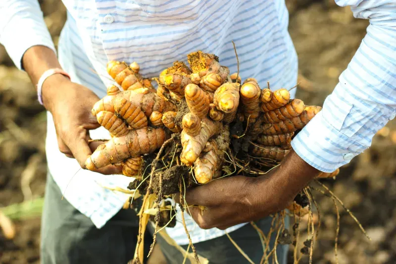
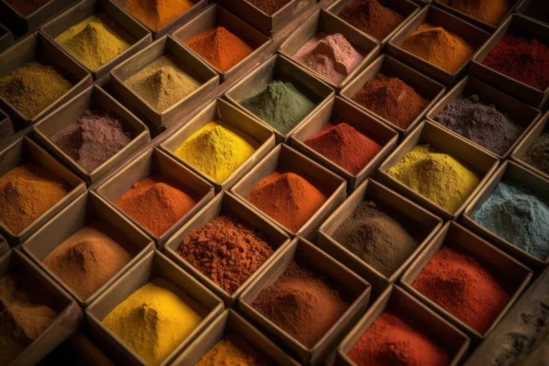

Introducing People of Spice
Our story
For thousands of years, civilizations around the globe have used spices to turn mealtimes into ritual — healing experiences for body and soul. We crave that same sense of community, adventure and savoring all of the world’s unique cuisines.
Our blends carry you from the food carts of Bangkok to a bayou-front kitchen in New Orleans, with equal parts comfort and excitement.
-

01Grow
We start with growers who know their soil, their climate and the exact moment each spice reaches its peak.
-
02Source
From the night markets of Bangkok to the souks of Tangier, every blend carries the story of where it comes from.
-

03Create
Balanced with a chef's precision and a home cook's heart, so simple ingredients taste like somewhere.